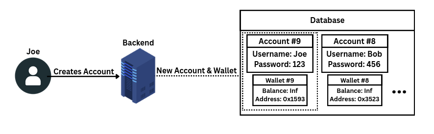

[ Blockchain & PPB Polling ]

Bebop, the mascot for PPB Polling. Illustrated by Chelsea Hodum.
| Project | Insights | Technical |
|---|
Genesis of PPB
Privacy Preserving Blockchain (PPB) is the basis of our project.
Seniors in the VCU College of Engineering must complete a year-long capstone project. We were given a list of some 140 to pick our top 10 from, of which Privacy Preserving Blockchain was my 7th pick.
The name of the project matches the whole description; how we were to use blockchain to "preserve privacy" was entirely up to us as a team. Let me get this out of the way now: I knew nothing about working with crypto and blockchain.
While I wasn't thrilled with this project assignment, I ended up enjoying working on it and am very pleased with the result.
This writeup will detail the development and structure of this project, I promise it'll be more interesting than it may seem.
The PPB Project
We probably had the most freedom of any of the capstone projects, which proved to be a double edged sword.
- The Good: As long as we worked with blockchain and "preserved privacy", we could pretty much do whatever we wanted.
- The Bad: We had no initial direction, and being inexperienced with blockchain made it difficult to determine where to go.
From our ideas, we settled on the most feasible: a blockchain polling system. Polling systems are a very common use case for blockchain technology, and our faculty advisor, Hong-Sheng Zhou, has papers published on this very topic.
(Another idea was a blockchain-based domain registrar, more on this later)
Applications of Blockchain
Is blockchain actually used anywhere other than cryptocurrency? If we ignore DeFi, cryptoexchanges, and things like NFTs we see a few commercial applications:
- Decentralized Identity - Identity Verification Systems that don't rely on centralized databases for verification. Think being able to verify your RealID with an employer through a cryptowallet.
- Private, Permissioned Blockchains - Distributed Ledgers, internal private blockchain networks used for auditing of financial history and transactions.
- Targeted Supply Chains - In scoped cases supply chain management incorporating blockchain has worked well. Walmart uses blockchain for tracking the sources of procured food. De Beers successfully used the blockchain software Tracr to trace diamonds from their source.
The biggest barrier of blockchain is its complexity and speed. There was a time where there was a lot of optimism with incorporating blockchain into global supply chains or healthcare systems. These ambitions have fallen through, with a few notorious cases.
The problem? Blockchain encourages "trustlessness", and while blockchain accomplishes this, we still can't trust the people using it.
Blockchain is:
- GREAT for decentralizing systems and their infrastructure.
- GREAT for publicly accountable ledgers and systems.
- GREAT for creating private systems with cryptography.
- AWFUL for high throughput systems and tasks.
- AWFUL for replacing existing tech infrastructure.
- AWFUL for storing complex or large data.
Looking at proposed implementations of blockchain we can see why it fell through when taking into account its strengths and limitations. Can you really store healthcare information on the blockchain? Due to the complexity of the data and its inherent immutability once on the blockchain: it's not practical.
Blockchain may not be universally applicable but it's still a very useful technology. Let's look at a case where blockchain technology is very applicable.
A Case For Blockchain Domain Registrars
As previously mentioned, my proposal for a project was a blockchain-backed domain registrar. Decentraweb is an example of this.
Problems with our current domain registration system:
- Centralization - Domain registration is wholly controlled by the centralized authority ICANN. ICANN controls who can have IPs and domain names and have the authority to revoke them at their will. (More on this soon...)
- Privacy (Lack thereof) - Domain registration is by design against privacy, requiring owners to provide contact information when purchasing a domain. This is all also publicly available through ICANN Lookup and Whois.
- Vulnerabilities - DNS is subject to spoofing, phishing, and cache poisoning.
- Security - (Soon) SSL certificates through certbot must be renewed every 47 days for valid HTTPS connectivity.
So how does a blockchain backend for this resolve these problems?
- Decentralization - Domain names would be wholly controlled by their owners in a P2P architecture. No central authority may charge you a lease for having it or revoke it from you.
- Optional Anonymity - Domain owners may pseudonymize themselves to prevent their data from becoming publicly accessible in Whois databases.
- Security - The benefits of a blockchain based domain registrar are immense. The blockchain is an indisputable source of truth, verifying absolutely that you own this domain.
One of the most important pieces here is that domain registration doesn't need high throughput or latency. It's more than acceptable for a transaction to take a few minutes in the case of domain names, we already wait a while for DNS records to propagate! Furthermore, domain registration is a very simple data primitive, just a string associated with its owner.
The issue with Decentraweb, and other web3 domain registrars, is that they are exclusively web3. They don't sell common TLDs, like .com or .org, they instead sell web3-specific ones like .limitless. This is not to take away from their product; I just believe the technology should be appropriated for all common TLDs.
MACI & Our Goal

The MACI Logo
One large benefit of going with polling is that there is a prevalent ecosystem of voting projects, and more importantly, frameworks for blockchain polling.
MACI stands for Minimal Anti-Collusion Infrastructure. It provides the smart-contracts that make private, secure blockchain voting accessible for development. The MACI framework is invaluable to blockchain voting systems. One statement from the MACI roadmap stood out:
"It's no secret that one of MACI long standing issues has [sic] having a centralised coordinator. They are able to see all of the votes in cleartext, which allows them to collude with bribers themselves, as well as voters."
"Perfect!" I said in response. Not in celebration of voter privacy being violated, but now we had a goal: do something about the MACI coordinator.
The project was no longer just another blockchain voting system, it would be about pushing the boundaries of anti-collusionary voting.
Smart Contracts
Smart Contracts establish terms of agreement between parties, what makes them "smart" is they are actually pieces of code that exist on the blockchain network. These are immutable (never-changing) and independent, meaning they reliably carry out their functions.
MACI has a set of smart contracts, each providing a different piece of functionality necessary to the voting system. These are written in Solidity. Notable are:
MACI.sol- The core contract, providing access to creating polls and signing up users.Policy.sol- Defines the registration process for MACI polls, providing several authentication options. The default, "FreeForAll", allows anyone to sign up.PollFactory.sol- Deploys new polls. Every time a poll is created, it gets three corresponding smart contracts:Poll.sol- Accepts votes and accepts users into the poll.MessageProcessor.sol- Prepares parameters for zk-SNARK circuits (More on these later...) for verifying proofs.Tally.sol- Submits processed votes to the tally results.
There are a few other smart contracts but these are the primary players in our system. The contracts are able to communicate between each other, but there is a missing piece: Where do votes, users, and polls come from? They come from MACIs Coordinator.
MACIs Coordinator
The coordinator is responsible for sending user registrations to MACI.sol, sending poll creations to PollFactory.sol, and sending votes to Poll.sol.
The coordinator is NOT on the blockchain. Rather it is a backend system for managing and interacting with all of the smart contracts. MACIs Coordinator is a set of APIs that may be used to interface with the contracts.
The MACI important coordinator endpoints are:
{domain}.{tld}/v1/deploy/maci- This deploys the MACI smart contract, starting the MACI service.{domain}.{tld}/v1/deploy/poll- Deploys a new poll on the MACI instance. Needs start / end dates, candidate count, and voting mode.{domain}.{tld}/v1/subgraph/deploy- Deploys the MACI subgraph which indexes and tracks the created smart contracts.- Poll Finalization Endpoints
{domain}.{tld}/v1/proof/merge- Merges all votes into a Merkle state tree.{domain}.{tld}/v1/proof/generate- Generates a zk-SNARK proof for the final tally.{domain}.{tld}/v1/proof/submit- Submits the final tally.{domain}.{tld}/v1/schedule/poll- Schedules a poll to automatically finalize (running merge, generate, and submit) once it's end time passes.{domain}.{tld}/v1/health- Checks that env variables are correct, zkeys are accessible, and if rapidsnark is available.
MACI 3.x offers a UI interface for their coordinator service, earlier versions did not offer this and thus every command needed to be entered from a command line or scripted together in a backend tool.
Where To Begin
Our original intention was to fork an already existing voting software, such as zkElect, PolyVote, or AnonVote. However after testing out a few of these I ran into several issues:
- Setup - Setting up these projects was always very difficult due to each having specific environmental configurations.
- Usability - They all required you to bring your own crypto wallet. This is a massive barrier for entry and makes it way harder for the average end-user to participate.
- Extensibility - Without knowing or understanding the structure of these projects it's not easy to extend them with our desired upgrades and functionality.
The real killer here is bringing your own crypto wallet, it makes testing, development, and participation more difficult. With zkElect to create a poll I had to install a crypto wallet, register an account, then hook it up to our virtual ethereum network.
Not enough funds. - the error says. Okay, to add funds to my wallet on a virtual network I need to access the deployer wallet and distribute myself some Ethereum. I deploy a poll, and go to vote on it.
Not enough funds. - the error says. I guess it cost too much to deploy the poll and now I'm out of Ethereum.
I think you understand the point, crypto outside of the major currency exchange platforms isn't very accessible. Here is where our three major project requirements cemented themselves:
- Make the backend extendable - The backend must be extensible so that it may be decentralized, preferably written in a language simpler than TypeScript.
- Make it accessible - Abstract away as much, if not all, of the cryptocurrency/wallet aspects from end-users.
- Weaken the coordinator - Mitigate the amount of control the coordinator has over the entire voting system; reduce its value as a target for malicious actors.
By focusing on the first requirement the rest become easier. The project would no longer be a fork, instead it was to be built from the ground up on the foundations of MACI.
Jon's Encryptionary
Throughout this writeup there are a lot of terms used that may not be self-evident or that presume prior knowledge. I'll define important terms here for reference, as many of them are prerequisite knowledge for understanding the more complex sections.
Glossary
Terms that will be useful to know when reading, or are worth defining.
-
Brute Force Attacks
Attempting to break into a system by randomly guessing passwords until you finally get it. Sounds silly, but super powerful machines can try this millions of times a minute.
-
Byzantine Fault Tolerance [BFT]
A property of distributed systems that makes sure consensus is reached by a minimum consensus of participants. The BFT limit is defined as
n ≥ 3f + 1, wherenis how many participants are necessary to accomodate up tofmalicious or faulty participants. -
Collusion
The cooperation of parties done in order to cheat or deceive others. In elections this may be coercion to vote for a specific candidate by threat or bribery.
-
Distributed Systems
When several individual computers are cooperatively running a program or service.
-
Encryption
Similar to a hash, but it must be reversible. You encrypt information much like you'd hash information, then you must be able to take this hash and turn it back into the original data. Two-way, reversible.
-
Hash
A hash is a one-way function that turns any input into nondescript text. Used for sending and storing sensitive data, passwords are often hashed before being stored. One-way, irreversible.
-
Node
A node is an independent party among a set of other parties. This generally refers to an isolated service or machine working among a distributed system.
-
Salt
Random data added as input to a value before hashing it. If two people use the same password, salt makes them look different in a database. Salt is used to defend against brute force attacks, specifically rainbow table attacks.
Schemas Used in PPB Polling
Includes hashing, encryption, and cipher schemas. These get very technical quickly, so I've tried to simplify it as much as I can with the first sentence.
-
bcrypt
Hides your password, so only you can log in. Used in the backend within
auth.py. It slowly hashes passwords before database storage. It's intentionally slow because logins must prioritize security over throughput. This is based on the Blowfish cipher. It uses salting, and can purposely be slowed down to mitigate brute-force attacks. -
XOR Stream Cipher
Scrambles the parts of the vote reading key until a password unscrambles it. Used in
guardian_service.pyandguardian_node.pyfor encryption of locally stored key values. XOR means "Exclusive Or", in your data stream everything is a 1 or 0, when XORing data, if both are 0 or both are 1, XOR returns 0. If only one of them is 1, XOR returns 1. XOR is perfectly invertible, so we can cipher data by using any random string and XORing it against our data, then reversing it. -
BabyJubJub
The math system all votes are based on, works well with MACIs proof systems. An elliptic curve built for use in zk-SNARK circuits. Curves like
secp256k1are expensive inside ZK proofs since it's a different number range (defined by the modulus applied to it) than the proof circuit zk-SNARKs use. BabyJubJub's field prime matches the field ofGroth16, which is the proving system MACI uses. This makes elliptic curve operations cheap enough to have inside of the proofs. Every voter keypair and ephemeral vote keypair in PPB Polling is a BabyJubJub keypair. -
ECDH
[Elliptic Curve Diffie-Hellman] Lets two people lock and unlock the same secret without ever sharing the key. A key agreement protocol, it allows two independent parties to decrypt the same message only using public information by using it with their own private information. Every vote is encrypted with ECDH with a per-vote keypair and the coordinators public key, and only the coordinators private-key can decrypt it.
-
HS256 (HMAC-SHA256)
[Hash-based Message Authentication Code] Stamps your login request so the server knows nobody has messed with it. This is used in
auth.pywith python-jose for signing JWTs. HMAC is Hash-based Message Authentication Code. It creates a tamper-evident signature on JWT payloads using a shared secret. -
Groth16
Proves a vote is valid, without revealing anything about it. A zk-SNARK proving scheme. Groth16 creates the smallest proofs of any zk-SNARK scheme. Our backend uses rapidsnark to run Groth16 proof generation. MACI uses it generate and verify all ZKPs. Groth16 expresses a computation as a set of arithmetic constraints, and proofs only ever require three elliptic curve points. It requires a trusted setup ceremony per circuit, MACI comes with a set of
zkeyfiles for this purpose. -
SHA256
[Secure Hash Algorithm] "Fingerprints" all data so if anything is tampered with, we know right away. Used in
key_manager.pyforcompute_share_checksum()AND incompute_checksum()AND in the guardians for verifying the integrity of their own share values. SHA256 is very common hashing function designed by the NSA. It is not used for passwords, only for integrity checking on data where the original input isn't secret - e.g. the encrypted share data for guardians. -
PBKDF2-HMAC-SHA256
[Password-Based Key Derivation Function 2] Turns weak passwords into strong cryptographic keys. Most passwords are short and predictable so they make poor cryptographic keys. PBKDF2 stretches it out into a fixed-length key, making brute-force attacks very expensive. It also incorporates salting to make brute-forcing even more difficult.
Weakening The Coordinator
The coordinator is necessary for MACIs function; it's also its Achilles' Heel. As stated by the developers of MACI: if you can access the coordinator you can see everyone and their votes. Ideally, we could have multiple coordinators that must act in consensus to conduct their responsibilities. This is not an easy approach and it still poses some problems:
- Eventually somebody has to hold the decryption key, we'd still have a single "super node".
- Implementing consensus on multiple coordinator nodes would be extraordinarily difficult. We can only rely on majority rules, such as the Byzantine Fault Tolerance (BFT) limit of
n≥3f+1. We'd need a lot of computers. - Voting becomes less reliable. We would need to make sure a vote reaches every coordinator node using a broadcaster system. Then how do we handle when the votes get out of sync or have time arrival differences at nodes?
So decentralizing the coordinator is impractical; instead we need to weaken it. This is where the simplest solution comes in: keep the decryption key out of the coordinator.
It would need it eventually, but by removing it until the time of decryption the coordinator is a far weaker entity in the MACI system. It wouldn't help much to just keep the key on another server, so we can actually split the key into pieces using Threshold Key Cryptography and share pieces to as many independent nodes as we want.

A diagram showing a key being split into three pieces, then distributed among 3 computers.
This is a Guardian Node system. Independent nodes will each hold a piece of the split key, the coordinator will request the key pieces when it's ready to finalize the poll, and the nodes may choose to provide their share.
With this system:
- Guardian nodes can be modified to run a set of integrity checks on the coordinator and blockchain before sharing their key piece.
- Votes cannot be read until a consensus is reached among the guardian nodes AFTER the poll has been finalized.
- We can control how many pieces we split our key into and the necessary threshold to reassemble it.
- The Backend - The central server that communicates with the smart contracts, guardians, and clients.
- The Guardians - A set of nodes each holding a share of the split decryption key.
- The Threshold - A program that breaks the private decryption key into
kpieces, sets the threshold for reassembling the key, then sets the distribution to be given to each guardian node.
The Frontend
The frontend for PPB Polling is a React/Vite webapp written in TypeScript. TypeScript was chosen because MACI is written in it. The webapp is split into three sections:
- The user interface - where people register, log in, and vote.
- The admin interface - where the admin can deploy, merge, and finalize polls.
- The demo interface - a demo site for our expo on the project, provides an interactive visualization of the system.
Initially the site was a single-page webapp containing the user and admin interfaces with styling generated by Claude. I eventually got tired of the visual clutter of the interface and the overall "web3 aesthetic" of the site, so I redesigned it to be much simpler.

A screenshot of the current PPB login page.

A screenshot of the current PPB admin panel.
The frontend isn't just an interface for using the MACI API calls though, it handles some important privacy-preserving functionality. This includes an account keypair, and one temporary keypair per vote.
MACI Identity Keypair - Generated with BabyJubJub. When you register an account, a keypair is generated.
- The public half of the keypair is sent to the coordinator to register the user. The private half never leaves the client.
- When the client votes, the vote is signed with their private key. This proves it's a legitimate vote, and allows a user to change their vote until the poll has ended.
This keypair allows a user to join polls with a ZK-proof, meaning a user can say "I know the private half of a public key that's registered." This is done without revealing the public key in question, preventing double-registration.
The "Vote" Keypair - Generated with BabyJubJub every time a user casts a vote.
- This encrypts the PCommand (vote message format) and removes all linkability between votes, meaning a user can't be triangulated off multiple votes.
- These keypairs are used once, then discarded.
What about the crypto wallets?
They're gone.
Everything crypto related is handled by the backend. Voting on PPB Polling requires not an ounce of knowledge on cryptocurrency. I'll go into more detail about how we abstracted this away from the end user when I talk about the backend.
The frontend is not just a UI atop MACI, it plays a vital role in protecting users confidentiality and privacy.
The Private Half of the Identity Keypair
In the last section I noted that the private half of the identity keypair never leaves the client. This is an intentional design choice recommended by MACI. When creating the identity keypair we have two routes to go:
- Send the whole keypair to the server.
- THE GOOD: Users could sign in from any device since they can recall their private-key from the server.
- THE BAD: If the private-keys were accessed by a malicious actor or made public, all votes could be decrypted and read in plaintext. The coordinator becomes a supreme liability and single-point-of-failure.
- Only send the public half of the keypair to the server.
- THE GOOD: As long as a user keeps their private key secret, their votes will be encrypted, thus untraceable.
- THE BAD: If you lose your private key, you lose your account. You also cannot vote on other devices.
Weighing the good and bad, it's preferable to lose user accounts than it would be to lose the anti-collusion functionality of the server. This is the nature of blockchain though; centralized trustlessness means decentralized responsibility.
Potential PPB Polling upgrade: Keep a user's private key encrypted locally and only decrypt it when they've entered their password.
Custodial Wallets
What percentage of people, when going to vote in a poll, would immediately click right off when they are prompted to connect their locally installed crypto-wallet to a virtual Ethereum network at a given RPC? I'd venture a guess at 99%.
Even those familiar with cryptocurrency would have their eyes glaze over at the prospect of hooking it up to a virtual network, so it was a high priority to abstract away all of the crypto wallet elements from the end-users.
Fortunately, this isn't as difficult as it may sound. We moved the responsibility to our backend where it creates a contained, managed wallet in association with every user account.
These custodial wallets are only accessible by the user account associated with it, these are a 1-to-1 pairing in the database.

A diagram showing the database creating a new account with an associated custodial wallet. Note that passwords are not stored in plaintext, but appear that way for visual clarity.
The Python eth-account library is an abstraction of the broader Web3.py library that specifically handles Ethereum network accounts. Using eth-account we are able to generate a private wallet keypair for every user to associate to their custodial account. Then we can use the Web3.py library to sign a transaction from the deployer wallet into the newly created account, keeping it perpetually funded, and thus always able to participate in polls.
With these libraries available, custodial wallet management on the backend was really not too difficult. In fact it was more difficult removing the wallet connectivity artifacts from the frontend than adding the wallet management to the backend.
Zero-Knowledge Proofs & zk-SNARKS
Zero-Knowledge Proofs (ZKPs)
Zero-Knowledge Proofs are foundational to how MACI creates a private, collusion resistant voting platform. Quoted from Ethereum.org:
A zero-knowledge proof is a way of proving the validity of a statement without revealing the statement itself. The ‘prover’ is the party trying to prove a claim, while the ‘verifier’ is responsible for validating the claim.
Let's say I'm the prover, and you are the verifier.
The Statement: Lightning McQueen is hidden in this picture.

A picture filled with cartoon characters, with Lightning McQueen hidden among them.
I know where the hidden Lightning McQueen is in this image. Here's my proof:

I haven't helped you find it, but you should now believe that I know where it is. This is a rather silly analogy, but it illustrates the point well. I've proven that I know certain information, without revealing anything about said information.
There is always a chance a proof could be guessed. To account for this, provers and verifiers run ZKPs by each other many times, to virtually eliminate the chance of solutions being arbitrarily guessed. zk-SNARKs do not require this multi-pass setup however.
How do they actually work?
ZKPs and zk-SNARKs are advanced cryptographic methods for validation. They enable authentication by the verifier while maintaining the anonymity of the prover. I'll explain the fundamentals of how they work to provide a better understanding of how MACI can protect voters privacy, while still only counting legitimate votes.
Computationally Asymmetric Problems - These are problems that are easy to verify, but hard to solve. Let's say I have the semiprime number 7.01770176x109. What two prime numbers make up this number? It may be a bit difficult to compute that but if I gave you 83557 and 83987 and tell you it's the factors, you can easily multiply them to verify if I'm correct. The point here is we can verify correctness easily without exactly being able to reverse-engineer the problem.
Polynomials - ZKPs convert statements into polynomial equations. The verifier then picks a random point and checks where it lies on the polynomial, a fake polynomial has a miniscule chance of getting the correct number. To use our previous example, we could try guessing random prime numbers, but the odds of picking the correct one are highly improbable. This is the foundation of interactive ZK proofs. However this is impractical in blockchain settings.
Non-Interactivity through Fiat-Shamir Transform - Bear with me here. Instead of the verifier sending random challenges, the prover will just use the hashed value of their transcript so far. This means it can automatically generate unpredictable values to challenge the prover, so a dedicated verifier is unnecessary.
zk-SNARKs
Stands for Zero-Knowledge Succint Non-Interactive ARgument of Knowledge. zk-SNARKs are special in that they require no interaction between the prover and verifier, their proof size is small, and verification is fast. MACI uses zk-SNARKs, specifically Groth16 proofs, exclusively.
SNARKs require a trusted setup ceremony, a computation involving multiple parties that generate public parameters called a Common Reference String (CRS). While the ceremony is happening; every attending party generates a secret, random value that contributes to the CRS. This value is called the "trapdoor", leaking of these values can lead to security compromises. So long as a single participant destroys their "trapdoor", the system is secure. This "trapdoor" leakage threshold is variable depending on the SNARK scheme being used.
I am not the person to explain them in full detail, so I will provide some links if you'd like more advanced coverage of the subjects.
The Backend
The backend is responsible for connecting all the pieces together, and as mentioned in the Where to Begin section, consists of three major parts: The Coordinator, the Guardians, and the Threshold. In this section we'll cover the general functionality of the backend, and the implementation of the MACI coordinator.
The backend is primarily written in Python and uses FastAPI for most of its work in communicating with other services, and importantly the smart contracts established by MACI. Some important libraries and their usages include:
- SQLAlchemy - Used for database operations with SQLite.
- Pydantic - Defines the API structures for validation and reads configurations from environmental variables.
- Web3 & eth-account - Handles the Ethereum interactions like signing transactions (voting), sending ETH to other wallets, and calling the smart contract functions.
- python-jose & passlib - Jose for JWT creation and decoding. Passlib is for bcrypt password hashing.
- uvicorn - Web server library for Python; it operates well with FastAPI.
Remember from earlier, there's still one keypair left to cover! We've pretty much described everything this poor keypair is put through and it's responsibilities, but just for posterity:
The Coordinator Keypair - The keypair used to decrypt votes.
- Divided into pieces by SSS and distributed to the guardians.
- After the private key is split and distributed, the backend cannot read or decrypt votes.
- Private key is reassembled once the defined threshold is met, returned to the backend so it can read the votes, then destroyed again.
With this, we've successfully weakened the coordinator drastically. By delegating key shares to guardians we've distributed the responsibilities of our system, protected the voters privacy, and alleviated one of the long-standing issues in MACI.
Summary Of Each File
The backend folder structure is a flat directory with every Python file in it. Not ideal, but works for our purposes.
main.py- FastAPI entry point. Creates the app, CORS middleware from settings, initializes the database schema, and mounts the routers.The backend starting point.auth.py- Handles authentication, hashes & verifies passwords (bcrypt), JWT creation & decoding, and handles bearer token extraction alongside with admin checking for certain privileges.database.py- Starts SQLAlchemy engine and exports DB calls for FastAPI to call from for any persistent data.models.py- Defines the 5 SQLAlchemy tables: User, CustodialWallet, Poll, TallyResult, and VoteReceipt. Also defines relationships, a User has one CustodialWallet and many VoteReceipt(s).schemas_threshold.py- Pydantic schemas specific for the threshold system.schemas.py- Pydantic models for request body validation and response creation in auth & poll routes.seed_admin.py- Standalone script that creates an admin user in the database. Run during setup.settings.py- Reads environment variables using pydantic-settings. Stores db url, blockchain RPC endpoint, MACI contract addresses, and more. Everything imports this.tally_pipeline.py- Pipeline for MACIs off-chain proof generation. Calls MACI PNPM scripts, parses resulting files into TallyResult dataclasses, and stores the results in a database. Temporarily holds the MACI coordinator private key.wallet_service.py- Custodial Wallet service. Creates Ethereum keypairs witheth-account, autofunds wallets withWeb3.py. Handles MACI signups, poll joining, and message publishing.routes_auth.py- Three endpoints under/api/auth,POST /registerfor creating a user which also generates them a custodial wallet and returns a JWT.POST /loginauthenticates form data and returns a JWT.GET /mereturns the current users profile. These rely onwallet_servicefunctions.routes_guardians.py- Guardian node processes, accepts heartbeat signals for tracking a guardians state, provides a list of active nodes, and provides active ceremonies for guardians to check for submissions.routes_join.py- One endpoint atPOST /api/polls/[poll-id]/jointhat invokes an ECMAScript module as a subprocess for joining the poll. Generates a ZK inclusion proof for the user and submits the join poll transaction.routes_polls.py- Endpoints for poll metadata and tally results. at/api/pollsand/api/poll-meta. Admins can create and update polls. All users can list polls and retrieve results.routes_threshold.py- Implements SSS for the coordinator private key, the endpoints allow the admin to split the key during initialization, list guardians, manage ceremonies, and trigger reconstruction. This culminates inrun_prove()fromtally_pipeline.pywhich temporarily reconstructs the key, then destroys it.routes_wallet.py- Endpoints under/api/walletfor wallet operations and voting. Calls the MACI signup function, join poll function, and publish message function.
The Universe: In a Cryptographic Context
In cryptography we need a couple of requirements:
- Arithmetic must work - All of our standard arithmetic operations need to behave normally and reversibly.
- Numbers must be bounded - A 256-bit private key must remain 256-bits. Operations shouldn't change the bit count or make the numbers infeasible to work with (like multi-million digits).
- Certain problems should be hard to reverse - Modular exponentiation (
ax % p) is fast, but trying to solve forx? Not so fast, in fact at a certain point it's computationally infeasible. This is the discrete logarithm problem.
So in order to accommodate these requirements, we create a universe of numbers in which our values can fall. This is easily applied by using the modulus (%) operator, which creates a bounding effect and a range of operable numbers. It also guarantees that the reversal of exponentiation on integers is no longer trivial. This modulus application must be done with a prime number.
Why a prime number? So our modulus can cover every number 0 - [prime] inclusively and so we can define multiplicative inverses (see Fermat's Little Theorem in the next section). Essentially, modular arithmetic doesn't naturally support division, so we must find the inverse of a number within the field. If a⋅b=0, either a or b must be 0. If we were using a nonprime number, say 100, we could multiply two non-zero numbers to arrive at 0. For example (5 * 25) % 100 = 0. These are zero divisors and their presence breaks arithmetic within our field prime.
In the case of PPB Polling we used the Ethereum standard field prime: secp256k1. This has been called cryptocurrency's key elliptical curve. We modulus every arithmetic operation with this prime number when working within modular arithmetic.
Shamir's Secret Sharing
Our guardian system is built on the concept of a Threshold Cryptosystem where we split our secret key among a number of independent parties. This section may get complex, so I'll do my best to balance the technical side with general explanations.
Shamir's Secret Sharing (SSS)
A secret sharing algorithm. A secret split by SSS cannot be revealed unless a predefined threshold is met. No information about the secret can be gained from any number of shares below the threshold.
Properties of SSS:
- Highly Secure - The system is information-theoretic secure, meaning an adversary with unlimited compute and time would still not be able to break it.
- Minimal - The size of each piece will not exceed the size of the original data.
- Extensible - Shares can be dynamically added or deleted without affecting existing shares.
- Dynamic - We can strengthen the security without changing the secret. This can be done by occasionally changing the polynomial (with the exception of the free term, which will be static) and constructing new shares for the participants.
- Flexibility - We can allocate varying numbers of shares to each participant. An example may be a company where we want our Chief-of-Security to have 3 shares instead of a standard 1 share.
Weaknesses of SSS:
- No verifiable secret sharing - SSS does not provide a way to verify the correctness of each share, meaning fake shares may be submitted. These fake shares wouldn't work towards decryption, but cannot be verified upon submission. However, this can be addressed in our implementation.
- Single point of failure - The entire key must exist somewhere before being split, and somewhere after being reassembled.
The weaknesses of SSS are evident in PPB Polling as mentioned earlier. There are two points at which we are holding the entire decryption key, so there is still room for improvement on the security of the voting system.
Mathematical Principles Of SSS
Buckle Up.
Polynomial Interpolation - A polynomial of degree k-1 is uniquely determined by exactly k points. E.g. a line can be defined by 2 points, a parabola can be defined by 3, etc. This is a general problem and can be approached with something like solving a system of equations.
Lagrange Interpolation - An alternative approach to finding a polynomial with the k points. For each given point i, we make a basis polynomial (g[x]) that equals 1 at g[i] and 0 at all other g[j]. This results in a final polynomial of f[x] = Σ yi · g[x]. During Shamir reconstruction we want where f[0], so we evaluate every g[0] for each point, and sum up the share values.
Splitting Example: Supposed we have the secret number 6767, and we want to split it into 4 (n=4) shares with a threshold of 3 (k=3) k-1=2 numbers are created at random, so we'll use a0=6767 (the secret), a1=123 and a2=456 Our polynomial for producing shares is therefore:
We'll create 4 points to create the shares, starting from x=1 since x=0 is our secret:
- S1 = [1, 7346]
- S2 = [2, 8837]
- S3 = [3, 11240]
- S4 = [4, 14555]
Reconstruction Example: Any subset of 3 of these points is enough to reconstruct the original polynomial. We'll need to compute the Lagrange basis polynomials, remember that the goal is to reconstruct the polynomial in which f[0] results in our original secret.
We will be using the points:
- (x0, y0) = [1, 7346]
- (x1, y1) = [2, 8837]
- (x2, y2) = [4, 14555]
Now we'll use the formula for polynomial interpolation:
What do we get at f[0]?
6767, our secret key!
This is the fundamental math behind Shamir's Secret Sharing, but modern interpretations optimize it to reduce the redundant calculations. To optimize it we split the computation into two phases by separating the parts that depend on x-coordinates from the parts that depend on y-values. This is called the Barycentric Form of Lagrange interpolation. In our implementation we use the standard Lagrange Interpolation since our share indices are just the natural numbers 1 -> n, however if we had hashed guardian IDs or thousands of shares (large x-coordinates), we'd optimize it and use the Barycentric form.
The final thing I'd like to cover in this section is Fermat's Little Theorem, which states:
Let 'p' be a prime number, and 'a' be any integer. Then ap-a is always divisible by p.
If you read the above section on our operable "universe", inside of the modulus we cannot divide (in the way we do normally). Instead we need to multiply by the modular inverse, and this is computed using Fermat's theorem:
Example; say our "universe" is 0-7 (p) and we want to find the equivalent of dividing by 5 OR 1/5 (a)
To prove this result works, let's try multiplying it against 5, our result should be 1:
We apply this every time we need to divide while operating in the bounded "universe", particularly during our Lagrange interpolation where we have fractional terms in the polynomial.
The Threshold
The Threshold system is in place to remove power from the coordinator, and make sure no single-party can decrypt or read votes. The threshold system runs in four stages:
- Setup - Takes the created coordinator private key and splits it into
npieces, as defined by the admin. This creates an encrypted share file for each piece, and a state tracking file for the backend. - Storage - Each guardian is sent their encrypted share file, which is then reencrypted with their own password-key from PBKDF2. This share is stored locally on the guardians machine.
- Open Ceremony - Guardians check if any poll ceremonies are created, upon finding an open one, they submit their share.
- Reassembly - Upon meeting the share threshold, the threshold runs a checksum, polynomial verification, reconstructs the private key, proves it's correct, sends it off for decryption, then destroys it.
The Threshold system only uses standard libraries:
hashlib- hashing and key derivation.secrets- cryptographically secure and randomized secretsgetpass- CLI password entering.base64- Data blobbing.urllib- For HTTP calls to the backend.
Only using standard library functions protects the guardians from supply-chain risks and dependency management.
Summary Of Each File
Another flat directory with every file, although this one is far less complex.
__init__.py- Package initializer, exportssplit_secret,reconstruct_secret,verify_share, and theThresholdKeyManagerclass to the backend.shamir.py- Implements SSS using the secp256k1 field prime as our "universe". We use the secp256k1 field prime because MACI keys are BabyJubJub scalars that are ≤253 bits, so we know our field prime is larger, and therefore we don't risk losing information during modular arithmetic. Splits the key, reassembles the key, (Lagrange Interpolation) and verifies that newly submitted shares lie on the same polynomial as preexisting shares, providing consensus through verification.key_manager.py- Controls the key ceremony lifecycles. TheThresholdKeyManagerclass holds guardian registry and the current state of the ceremony in memory. All instances of the existing key are kept a minimum, being zeroed out and deleted when not explicitly being passed to another function. It also verifies shares when they are submitted through their SHA256 checksums and polynomial consistency withverify_share(), meaning we mitigate one of the inherent weaknesses of SSS.guardian_service.py- The Guardian CLI with two commands: save and submit. Save encrypts the guardians share and saves it to disk, while submit loads it, decrypts it, and sends it to the backend. It uses PBKDF2-HMAC-SHA256 as it's key derivation scheme with 100,000 iterations.setup_threshold.py- Standalone, one-time setup CLI. Initializes theThresholdKeyManager, splitting the secret key, encrypting every split, and writes the manager state (guardian IDs, names, share indices, and share checksums) to a local file - which is sent to the backend. Once this script is finished, the private key will never be seen until reassembly.
Note: In guardian services we encrypt the local share over 100,000 passes because it is a defined NIST Standard.
The threshold is primarily used during the set up of the voting system, and is invoked as a library by the coordinator otherwise. It doesn't run independent services on it's own besides it's setup script.
The Guardians
The Guardian nodes are each responsible for holding a piece of the split MACI coordinator private key. Our SSS implementation allows us to create as many guardian nodes as we desire, and with any defined threshold. Furthermore the dynamicism of SSS allows us to create more nodes for key-shares as long as we don't modify the currently existing shares.
In production environments, a guardian service would be isolated to its own machine or hardened container. They operate on a loop, conducting two actions every 6 seconds; their heartbeat and their ceremony checking. These nodes have three primary functions:
- Heartbeat - The guardians will send a heartbeat signal to the backend every 6 seconds to let it know they're alive and well.
- Watch For Ceremonies - The guardians will check the available ceremonies API every 6 seconds
- Submit their share of the key - If a ceremony is found they will submit their share of the key.
It should be noted that the guardians as of now immediately submit their key share, with no preprocessing or integrity checking on the backend. The extensibility is readily apparent though and there are a few ways we can incorporate verification before guardian submission:
- Human Oversight - We could have it prompt a user in control of the guardian to actually accept before submission.
- Poll Validity - If we sent out new polls to every guardian as they're created, we could have it crosscheck all poll ceremonies for the poll ID before submission.
- Peer-to-peer Coordination - If we had all guardian nodes communicate via peer-to-peer we could automate a system in which consensus must be reached among subgroups before they submit their shares.
The Guardian system is all contained in a single, fairly small, file. Similar to the Threshold it only uses standard libraries.
Rapidsnark
Rapidsnark is a zk-SNARK prover that is specifically made for Groth16 SNARKS. MACI will default to Rapidsnark if it's found on the system, otherwise it uses snarkjs.
I wanted to bring it up just to mention the sheer difference in speed that Rapidsnark makes. During testing when I was trying to join a poll it was taking AGES for the proof generation, to the point I kept hitting 10-minute timeout windows.
I built rapidsnark locally, directed MACI to it, and saw at least a 2500x faster proof speed. It makes the time for proofs negligible and was invaluable for testing.
The Development Environment
MACI requires quite a bit of set up before you can begin using it for development or deployment. This is all documented here. The basic steps for setting up are:
- Build the MACI directory and install all pnpm dependencies (standard enough)
- Download zkeys for Groth16 proof generation. These are ~8GB big.
- Generate the coordinator's keypair.
- Configure the MACI environment
- Copies example values into .env using both our defined sample .env
- Copies over MACIs example deploy configs with the new public key injected.
- Deploy the smart contracts by temporarily bringing up a Hardhat network.
- Install optional dependencies including rapidsnark and poseidon2. These may be posited as optional but are very much necessary
All of this has been automated with a Makefile command. This Makefile has several other vital development and deployment commands written into it:
make frontend- Installs necessary packages then begins the frontend dev environment with Vite.make backend- Begins the backend coordinator service with uvicorn. This does not include the threshold or guardians.make backend-setup- Configures the .env, seeds an admin, and initializes the threshold.make hhup- Brings up the virtual Ethereum network on Hardhat. Stores the PID locally to easily bring back down.make hhdown- Takes down the virtual Ethereum network on Hardhat. Uses the locally saved PID frommake hhupmake guardians- Initializes and brings up three guardian nodes, saving all their PIDs for easy takedown.make guardians-stop- Kills guardian nodes using the locally saved PIDs.make dev- Brings up the hardhat network, backend service, and guardian nodes.make dev-stop- Takes down the backend and the created guardian nodes.make clean- Deletes all autogenerated files for a fresh start.
All of this was added to make working with the system, and MACI, easier. It reduces a lot of the tedium that needed to be done manually before.
Terminus of PPB
PPB, as a capstone project, has come to a conclusion. I'd like to present the original problem statement we were given when beginning this project:
Bitcoin’s blockchain is secure and transparent, but that transparency can reveal addresses, balances, and business relationships. In the Privacy-Preserving Blockchain project, we’ll apply cryptographic techniques to conceal who is transacting and how much is transferred, while still allowing anyone to verify the ledger’s integrity. By keeping data private yet provably correct, this approach opens blockchain to finance, healthcare, supply chains, and any field where confidentiality is essential.
I am pleased to say that we've fulfilled the problem statement. Voting, a field where integrity and confidentiality is essential, has already benefitted from the cryptographic security of through MACI. PPB Polling noted a vulnerability in the system and successfully established a mitigation.
Jon Rutan, 2026